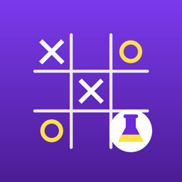

TicTacLearn
Support
Need help, found a mistake, or have an idea? Email frixylabs@gmail.com.
Common questions
How long does training take?
It depends on your iPhone; the Train screen shows the speed as it goes. On an iPhone 17 Pro Max the Smart recipe plays about 1,000 practice games per second. In the developer's tests of 30 Smart AIs, 28 drew all 200 test games against the perfect player at least once within 10,000 practice games, and all 30 within 17,000. Each new AI starts from different random numbers, so yours may be faster or slower. Classic is much slower: none of 10 Classic AIs got through a test without losing to the perfect player in 30,000 games.
Why did training pause?
Training pauses when you leave the app; tap Resume to continue. If your phone gets hot, training slows down, and if it gets very hot, training stops by itself until the phone cools down. The Train screen tells you when either happens.
Why did its test results get worse for a while?
That's normal for this kind of learning (Q-learning is known to be less stable than some other methods). Every checkpoint is saved, so you can play earlier versions on the Play tab.
Does playing against the AI change it?
No. It only learns during training. Playing, hints and the arena never change its weights.
Where are my trained AIs stored?
Only on your device (and in your own iCloud or computer backups, like any app's data). Delete one by touching and holding it on the Train tab. Deleting the app deletes them all.
Is this how AI chatbots work?
Only partly. Lesson 12 explains the similarities and differences, based on the chatbot makers' published research (see Learn → Sources in the app).